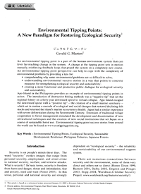
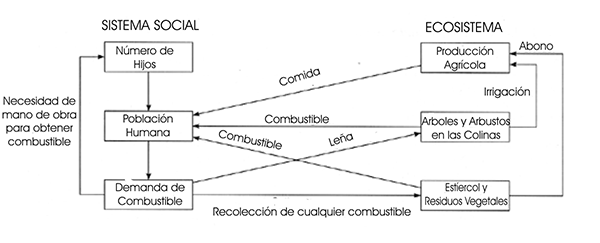

|
 |
 |
Puntos de
Inflexión Ecológica
- Cómo funcionan?
- Transformando círculos viciosos a círculos virtuosos
- Ingredientes para el éxito
- Elaboren sus propios Puntos de Inflexión Ecológica
Historias por Región
Historias por Tema
- Agricultura
- Agua y Cuencas
- Bosques
- Ecosistemas Urbanos
- Educación
- Energía
- Negocios
- Pesquerías
- Salud Pública
Videos Cortos
- Salvando un arrecife coral y una pesquería
(Filipinas) - Revitalizando vecindades urbanas con jardines comunitarios
(Nueva York) - Revirtiendo la deforestación tropical con bosques comunitarios
(Thailandia) - Rellenando aguas subterráneas con captación pluvial
(Rajastán, India) - Escapando la trampa de pesticidas
(India)
Explicando el Éxito
- Salvando un arrecife coral y una pesquería
(Filipinas) - Revitalizando vecindades urbanas con jardines comunitarios
(Nueva York) - Revirtiendo la deforestación tropical con bosques comunitarios
(Thailandia) - Rellenando aguas subterráneas con captación pluvial
(Rajastán, India) - Escapando la trampa de pesticidas
(India)

Ecología Humana: Presenta los principios de la ecología humana que sirven de fundamento a los Puntos de Inflexión Ecológica
Puntos de Inflexión Ecológica: Un Nuevo Paradigma para Restaurar la Seguridad Ambiental
- Autor: Gerald Marten
- Este artículo está basado en el discurso de despedida del autor, presentado el 12 de Enero del 2005 en el Campus Kobe-Sanda de la Universidad Kwansei Gakuin. Fue publicado en Journal of Policy Studies (Japón), No. 20 (July 2005), p. 75-87.

Un punto de inflexión ecológica es parte del sistema humano-ecosistema que puede servir de palanca y generar cambios de largo alcance en el sistema. Un cambio en el punto de inflexión detona circuitos de retroalimentación mutuamente reforzadores que dan un nuevo rumbo al sistema. Una perspectiva de puntos de inflexión ecológica puede ayudar a lidiar con la complejidad de problemas ambientales al brindar un enfoque a:
- El entendimiento de por qué algunos problemas son tan difíciles de resolver;
- Comprender las historias de éxito ambiental de manera que indiquen medidas concretas para fortalecer la seguridad ambiental y la sustentabilidad;
- Generar un diálogo público más funcional y productivo en cuanto a seguridad ambiental y sustentabilidad.
La Isla Apo en las Filipinas nos brinda un ejemplo de los puntos de inflexión ecológica en acción. La introducción de métodos destructivos de pesca fue la "inflexión negativa" que impulsó a la pesquería regional en una espiral descendiente durante 40 años hacia un colapso virtual. La Isla Apo escapó de esta espiral descendiente con una "inflexión positiva" - la creación de un pequeño santuario marino - el cual detonó una cascada de cambios ecológicos y sociales que restauraron las disminuidas reservas pesqueras y regresó la salud al ecosistema marino de la isla. Japón tuvo una experiencia similar con la deforestación severa del Siglo XVII. La expansión de la cooperación tradicional aldeana a la gestión de los bosques estimuló el desarrollo y difusión de nuevas técnicas de silvicultura y la creación de nuevas instituciones sociales que impulsaron al Japón hacía el uso sustentable de sus bosques. Pueden encontrarse historias exitosas de puntos de inflexión ecológica en el sitio web www.ecotippingpoints.org.
Palabras Clave: Puntos de Inflexión Ecológica. Seguridad Ambiental. Desarrollo Sustentable. Resiliencia. Pesquerías Filipinas. Bosques Japoneses.
Introducción
La seguridad es un tema que la gente tiene mucho en mente estos días. La palabra "seguridad" invoca imágenes que van desde seguridad personal, empleo, y crimen callejero, hasta seguridad nacional, guerras y ataques terroristas. ¿Qué es la seguridad? En términos básicos, estar seguro es estar libre de daños y peligros, amenazas e intimidaciones, miedos y ansiedades, carencias y escasez (Foster 2005). En este sentido, la seguridad tanto personal como nacional, depende fuertemente de la "seguridad ambiental" - la confiabilidad y sustentabilidad de nuestro sistema de apoyo ambiental.
Hay numerosas conexiones entre la seguridad y el medio ambiente. Algunas son muy directas y otras no tanto (Homer Dixon 1999, Barnett 2001, Dalby 2002, Degeest and Pirages 2003, Stipp 2004, Worldwatch Global Security Project
- El colapso de servicios por parte del sistema de apoyo ambiental puede imposibilitar que la gente cumpla sus necesidades básicas.
- El deterioro de la capacidad productiva de la tierra ha obligado a millones de personas en varias partes del mundo a migrar del campo a la ciudad, y de naciones pobres a las más prósperas.
- Es común el conflicto entre naciones por tierra, agua, petróleo u otros recursos naturales.
- Las guerras por autonomía o independencia son motivadas por las aspiraciones de minorías regionales por controlar y beneficiarse de sus propios recursos naturales cuando éstos son explotados y degradados por las élites nacionales.
- Donde los prospectos de empleos son disminuidos por el deterioro ambiental, jóvenes amargados son fácilmente reclutados al terrorismo internacional.
Creo que fue la importancia de la seguridad ambiental futura del Japón lo que motivó a la Universidad Kwansei Gakuin a designar a la ecología human como un tema central de su Facultad de Estudios Políticos. Siendo esta la ciencia de las interacciones entre humanos y ecosistemas, la ecología humana responde a la pregunta práctica de qué es lo que hace sostenible o insostenible a los sistemas humano-ecosistemas. Una pregunta central para mi, como maestro de ecología human en la Facultad de Estudios Políticos, ha sido la conexión entre la ciencia de la ecología humana y sus aplicaciones prácticas. En otras palabras "¿Cómo puede la ecología humana contribuir al desarrollo sustentable?"
Una respuesta plenamente satisfactoria a esta pregunta nos elude. Los sistemas humano-ecosistemas son tan complejos que es virtualmente imposible comprender las implicaciones de todas sus conexiones. La ecología humana puede contribuir al desarrollo sustentable al concienciar sobre el medio ambiente e indicar las no-tan-obvias consecuencias ambientales de nuestras acciones, pero las predicciones ambientales típicamente son menos precisas de lo que deseáramos. Lo que es más, los humanos simplemente carecemos la capacidad para arreglar paso a paso todo lo que falla cuando un sistema humano-ecosistema no es sostenible. La mayoría de lo que podemos hacer tiene poco impacto contra las poderosas fuerzas sociales como la explosión demográfica, la globalización, la urbanización y la sociedad de consumo que exige cada vez más del medio ambiente - fuerzas sociales que merman la sustentabilidad y nuestra seguridad ambiental. Aunque ganamos algunas batallas a favor de la sustentabilidad, parece que perdemos la guerra.
La mejor manera en que la ecología human puede contribuir al desarrollo sustentable es ofreciendo perspectivas (paradigmas) sobre el medio ambiente superiores a las perspectivas que nos han causado tantos problemas. Los paradigmas deben ser comprensibles a individuos que no sean especialistas en ecología, para que todos puedan entenderlas y aplicarlas. Creo que he encontrado dicho paradigma, y lo he llamado "puntos de inflexión ecológica".
¿Que son los Puntos de Inflexión Ecológica?
La expresión "tip point" (punto de inflexión) fue usada por primera vez por Grodzins (1957) en referencia a un umbral específico. El "punto de inflexión" era el porcentaje de residentes no-blancos en un barrio que previamente era totalmente blanco que precipitaría que los blancos restantes huyeran del barrio, resultando en que el barrio se habite por completo por no-blancos. Wolf (1963) utilizó la frase "tipping point" para describir el mismo fenómeno, y Schelling (1978) aplicó la frase a otros fenómenos sociales. La frase fue popularizada por Malcolm Gladwell en su best-seller The Tipping Point: How Little Things Can Make a Big Difference (Gladwell 2000), el cual utilizó la frase para representar el punto en que "despega" una nueva idea, difundiéndose rápidamente a través de una sociedad. Aunque Grodzins, Wolf, Schelling y Gladwell no utilizaron la jerga de sistemas tal como "circuitos de retroalimentación positiva", su uso de la frase "tipping point" reflejó los efectos amplificadores de los circuitos de retroalimentación positiva y el poder de los circuitos de retroalimentación positiva para engendrar cambios.
Yo uso "punto de inflexión ecológica" en el sentido de que una palanca puede mover al sistema hombre-ecosistema de una serie de procesos mutuamente reforzadores (llamado un "dominio de estabilidad" o "cuenca atractiva" en la jerga de sistemas) a otro dominio de estabilidad que impulsa el cambio en dirección completamente distinta. Un punto de inflexión ecológica es una particularidad del sistema humano-ecosistema que al ser alterado puede poner en marcha circuitos de retroalimentación positiva que impulsan al sistema en otra dirección. El cambio que impulsa la transición del sistema puede involucrar a una parte previamente existente del sistema, o puede consistir en la adición de algo nuevo.
La "inflexión negativa" es un cambio de un dominio de estabilidad deseable a uno indeseable, un cambio de un sistema de apoyo ambiental sustentable al deterioro de los servicios ambientales. La "inflexión positiva" es la transición de un dominio de estabilidad indeseable a uno deseable. El deterioro es revertido y el sistema humano-ecosistema se impulsa hacia una mayor sustentabilidad.
Una Historia de Punto de Inflexión Ecológica: Combustible para Cocinar, Deforestación y Biodigestores
En mi curso "Introducción a la Ecología Humana," he utilizado un ejemplo algo idealizado sobre el combustible para cocinar en la India, para ilustrar la esencia de los puntos de inflexión ecológica (Marten 2001, p. 5-7; Marten et al. 2005, p. 5-8). Esta es la historia. Durante miles de años la gente cortó ramas de árboles y arbustos para cocinar su comida. Mientras no había demasiada gente, esto no representó problema alguno, pero la situación cambió con la explosión demográfica del Siglo XX. El gran número de personas cortó tanta leña que dejaron de haber árboles y arbustos para proveerles del combustible que necesitaban. La gente respondió enviando a sus hijos en busca de cualquier cosa que pudiera quemarse, ramitas, residuos de la cosecha, estiércol de vaca. La recolección de combustible dio valor al trabajo infantil, reforzando el incentivo para las familias grandes. La población continuó creciendo, lo cual aumentó la demanda por combustible.
La recolección intensa de combustible para la cocina tuvo varias consecuencias graves para el ecosistema (Figura 1). Al utilizar el estiércol de vaca como combustible, se redujo la cantidad de estiércol disponible para uso como fertilizante en los sembradíos. Se redujo la fertilidad de la tierra, y disminuyó la producción alimenticia. Además, el flujo de agua para irrigación procedente de colinas deforestadas, se redujo en temporada seca. La erosión fue mayor y el agua de riego tuvo más sedimento, el cual fue depositado en canales, obstruyéndolos y reduciendo aún más la producción alimenticia.

Figura 1. Combustible para cocinar y la deforestación: cadena de efectos y circuitos de retroalimentación positiva a través del ecosistema y del sistema social que generan círculos viciosos de deterioro ambiental progresivamente mayor (Marten 2001).
La población humana fue el punto de inflexión que hizo de palanca para impulsar al sistema human-ecosistema hacia un círculo vicioso de deforestación, escasez de combustible, menor producción alimenticia, y mayor crecimiento poblacional. Parecía imposible resolver todos los problemas de frente a tan poderosas fuerzas sociales y ambientales. Afortunadamente un solo avance tecnológico permitió revertir estas tendencias.
ONGs y gobiernos comenzaron a introducir biodigestores a aldeas hace aproximadamente 25 años. Los biodigestores eran grandes tanques de fermentación en que la gente colocaba sus desechos, estiércol y residuos vegetales para producir gas metano como combustible. Al terminar la fermentación, los desechos animales y vegetales eran removidos y utilizados como fertilizante en los sembradíos. Al tener gas para cocinar, hubo menor presión sobre los bosques. En la ausencia de otras actividades como la tala comercial o la incursión agrícola, los bosques comenzaron a recuperarse, brindando más agua más limpia para la irrigación. Los residuos vegetales y animales volvieron a ser utilizados para fertilizar los campos (tras ser utilizados en los biodigestores), aumentó la producción de alimentos y la gente dejó de necesitar gran cantidad de hijos para recolectar combustibles escasos.
Esta historia es una representación altamente simplificada de una situación muy compleja. Muchos factores adicionales a la recolección de leña son responsables de la deforestación y el tamaño de las familias. Además, otras tecnologías adicionales al biogas, tales como estufas más eficientes y el gas propano licuado, también han reducido la demanda de leña. Sin embargo, los biodigestores se han propagado en la India, y en la actualidad funcionan millones, y muchos de los efectos benéficos se han realizado. El sitio web del Ministerio de Fuentes No-Convencionales de Energía del gobierno de la India (www.mnes.nic.in) resume lo que sucede en la actualidad.
En la historia sobre la deforestación y combustible para la cocina, los biodigestores fueron un punto de inflexión que sirvió de palanca para impulsar al sistema hacia un dominio de estabilidad que revirtió los circuitos de retroalimentación responsables del deterioro. El círculo vicioso fue transformado en un "círculo virtuoso". Con los biodigestores, la retroalimentación de la Figura 1 reforzó los esfuerzos por resolver los problemas, en vez de anular dichos esfuerzos.
Los puntos de inflexión ecológica ofrecen un paradigma de esperanza en un mundo de deterioro ambiental acelerado, al brindarnos una alternativa al micro-manejo. Los insumos de información, materia, y energía necesarios para micro-manejar las soluciones a diversidad de problemas ambientales que enfrentamos simplemente están fuera del alcance de la capacidad humana. Los puntos de inflexión ecológica no son balas mágicas que solucionarán problemas ambientales de un día a otro. Pero en un mundo con recursos limitados y poderosas corrientes sociales y ecológicas, son una manera eficiente de impulsar al poder auto-organizador de la naturaleza, y de la naturaleza humana, a trabajar por la mejor salud de nuestros sistemas de apoyo ambiental.
Isla Apo: Una Historia del Colapso y Rescate de Pesquerías
En Septiembre del 2004 fui a la Isla Apo con mi Clase de Taller (Jishuu) para realizar investigación en ecología humana. La isla nos brindó un caso de estudio relativamente sencillo pero muy ilustrativo para la exploración de cómo funcionan los puntos de inflexión ecológica en la práctica.
Apo es una pequeña isla (78 hectáreas), a nueve kilómetros de la costa de Negros en las Filipinas. La isla tiene 145 familias y una población residente de 710 personas. Casi todos los hombres de la isla son pescadores. La principal zona de pesca es en la zona que rodea la isla a una distancia aproximada de 500 metros, un área con extensos arrecifes coralinos y con una profundidad que alcanza los 60 metros. Los pescadores utilizan pequeñas canoas de remo, aunque algunos pescadores (particularmente los jóvenes) tienen motores en sus canoas. Las principales artes de pesca son de línea y anzuelo, redes, y trampas de bambú.
La "inflexión negativa" de la Isla Apo comenzó hace aproximadamente 40 años. Antes, la pesquería era sana y sustentable, proveyendo ampliamente a los pescadores y sus familias. Durante los años posteriores a la Segunda Guerra Mundial, la explosión demográfica y el aumento en la presión pesquera aumentaron la vulnerabilidad a la pesca insostenible. La "inflexión negativa" vino con la introducción de cuatro métodos de pesca a las Filipinas:
- La pesca con dinamita, que comenzó con explosivos sobrantes de la Segunda Guerra Mundial, y cobró fuerza en los 1960s;
- El Muro-ami (del Japón). Los peces son espantados hacia las redes al golpear el coral con piedras.
- El cianuro, introducido durante los 1970s para el comercio de peces de acuario. Ya no se capturan peces de acuario en la región, pero persiste el cianuro.
- Redes de malla chica. El mercadeo mundial de las nuevas redes de nylon introdujo las redes de malla chica a la región en los 1970s.
La dinamita, el cianuro, el muro-ami, y las redes de malla chica son más eficaces que los métodos tradicionales de los Filipinos, pero son gravemente dañinos a la sustentabilidad de la pesquería. Además de facilitar la sobrepesca y la captura de peces inmaduros, dañan el hábitat de los peces. Estos métodos han sido ilegales desde los 1980s. La Guarda Costa Filipina y la Policía Nacional son responsables de hacer cumplir las reglas de pesca, pero las extensiones masivas bajo su jurisdicción les ha hecho virtualmente imposible a estas agencias mitigar la pesca destructiva.
La introducción de los métodos destructivos de pesca puso en marcha un círculo vicioso de reservas pesqueras a la baja y uso de métodos destructivos a la alza para compensar el deterioro en las condiciones pesqueras. El daño al hábitat arrecifal es ahora muy extenso en gran parte de las Filipinas, y las reservas de peces en las zonas más degradadas representan el 5-10% de lo que eran hace 50 años. Aunque la captura en zonas dañadas no dan para mantener a un pescador de tiempo completo, la pesquería continúa deprimida debido al gran número de pescadores, muchos de ellos de medio-tiempo y muchos de ellos que utilizan métodos ilegales de pesca por considerarlos la única manera práctica de capturar peces bajo esas condiciones. El problema es amplificado por la incursión ilegal de embarcaciones mayores de pesca comercial con equipo más sofisticado cuando la vigilancia es ligera y las condiciones cercanas a la costa son favorables a dichas incursiones.
El preámbulo a la inflexión positiva para la Isla Apo comenzó en 1974, cuando el Dr. Angel Alcala (Director del laboratorio marino en la Universidad Silliman de Ciudad Dumaguete) y el municipio de Oslob (Cebú) iniciaron un pequeño santuario marino, el primero en la región, en la isla despoblada de Sumilón (a 50 Km. de Apo). El Dr. Alcala y algunos de sus colegas en la Universidad Silliman visitaron la Isla Apo en 1979 para explicar como un santuario podría revertir la degradación de su pesquería, un deterioro que ya era obvio para todos. Para entonces las reservas de peces en las zonas de pesca de la Isla Apo habían disminuido tanto que los pescadores pasaban mucho de su tiempo viajando hasta 10 Km. de distancia de la isla en busca de condiciones más favorables.
El Dr. Alcala llevó a algunos pescadores a ver el santuario marino de la Isla Sumilon, en el que abundaban los peces. Pudieron ver como el santuario podría servir de criadero para las zonas adyacentes, pero no se convencieron del todo. Los santuarios marinos no son parte de la tradición pesquera Filipina. Tras tres años de diálogo entre personal de la Universidad Silliman y pescadores de la Isla Apo, 14 familias decidieron establecer un santuario de cero-pesca en la Isla. La minoría de familias pudo hacerlo porque el capitán barangay (líder del gobierno local) apoyó la idea.
La inflexión positiva para la Isla Apo se dio con la fundación del santuario marino en 1982. Los pescadores seleccionaron como santuario a un área a lo largo de 450 metros de litoral y la extendieron 500 metros mar adentro - poco menos del 10% de la zona de pesca de la Isla. El santuario tenía coral de buena calidad, pero pocos peces. Requería tan solo a una persona de guardia en la playa para garantizar que nadie pescara en el santuario. El cargo de guardia se rotó entre las familias participantes.
Tanto el número como el tamaño de los peces comenzaron a aumentar dentro del santuario y se "derramaron" al ecosistema adyacente, lo cual incrementó la captura en la periferia, eventualmente hasta una distancia de varios cientos de metros. En 1985 todas las familias de la isla decidieron apoyar el santuario y de darle validez legal a través del gobierno municipal.
Cuando los pescadores vieron lo que sucedía dentro y alrededor del santuario, concluyeron que reglamentando la pesca sobre todas las zonas pesqueras de la isla aumentaría las reservas en toda el área. Con apoyo técnico de una ONG especializada en gestión de recursos costeros, los pescadores implementaron un Comité de Gestión Marina y formularon reglamentos contra la pesca destructiva y la incursión de pescadores ajenos a la zona. Establecieron una "guardia marina" local (bantay dagat) consistente de aldeanos voluntarios para patrullar la zona. Ya no fue necesario vigilar el santuario en sí, porque todos aceptaron su status como zona de veda. La tarea principal de los guardias hoy en día es revisar las embarcaciones que entran en su zona pesquera. No necesitan preocuparse por los pescadores de Apo, porque la pesca sustentable se convertido en parte integral de la cultura de la isla.
Aunque los datos disponibles no permiten comparaciones precisas de las reserves actuales de peces en la Isla Apo con las reservas al momento que se creó el santuario, los datos sí indican que en general la medida de captura-por-esfuerzo se triplicó para mediados de los 1990s y no ha aumentado significativamente desde entonces. Sin embargo, los peces más grandes y de mayor valor comercial han aumentado más lentamente y continúan aumentando. Esto es confirmado por la impresión subjetiva de los mismos pescadores (Russ et al. 2004).
Curiosamente, la captura total de los pescadores isleños es más o menos la misma que hace 23 años, cuando se dio inicio al santuario Esto se debe a que los pescadores han respondido al aumento en las reservas reduciendo sus esfuerzos, en vez de capturando más peces. Los pescadores ya no tienen que viajar largas distancias para encontrar peces en otros lugares. La pesca es bastante buena alrededor de la misma isla. Unas cuantas horas de trabajo por día proveen a la familia de alimento e ingresos suficientes para sus necesidades. Los pescadores antes trabajaban largas horas. Ahora disfrutan su tiempo libre. Si así lo desean, pueden aprovechan algo de su tiempo libre para otras actividades económicas, como el transporte de mercancía y personas entre la isla y tierra firma. La razón primordial para buscar ingresos adicionales es para financiar la educación superior de sus hijos.
La impresionante abundancia y diversidad de peces y demás animales marinos (por ejemplo, tortugas y serpientes marinas) alrededor de la isla ha atraído al turismo de arrecifes (Cadiz and Calumpong 2000). La isla tiene dos pequeños hoteles y una tienda de buceo, los cuales emplean a docenas de residentes. Además, vienen embarcaciones de buceo desde tierra firme cada día. Algunas familias rentan cuartos a turistas, y algunas mujeres tienen empleos turísticos, como cocineras para los hoteles o vendiendo playeras. El gobierno de la isla recolecta una cuota por buceo o snorkel, la cual se ha utilizado para comprar un generador de diesel que abastece de electricidad a cada casa en la isla durante la noche. Las cuotas turísticas también han financiado mejoras significativas en la escuela primaria, la recolección de basura para su disposición en un relleno sanitario en tierra firme, y mejoras en el abasto de agua. Con apoyo de la Universidad Silliman, la escuela primaria ha desarrollado un currículo de ciencias ambientales que ofrece información exhaustiva sobre el ecosistema marino de la isla.
El turismo también ha generado ingresos familiares y becas (de parte de uno de los hoteleros) para que más de la mitad de los niños isleños atiendan la escuela secundaria en tierra firme. Y muchos continúan con la universidad. La mayoría de los graduados de la secundaria regresan a vivir en la isla, donde los hombres trabajan como pescadores. Sin embargo, casi todos los graduados universitarios y algunos de los graduados de secundaria se quedan en tierra firme con empleos que les permiten enviar dinero a sus familias en la isla. Algunos pocos graduados universitarios regresan como profesionistas a la isla, por ejemplo como maestros, y algunos aspiran a regresar para contribuir a los servicios de salud, gobierno o gestión ambiental. Las remesas de los familiares que no viven en la isla son utilizadas principalmente para infraestructura privada, como mejoras a la vivienda. Muchos de los que no viven en la isla, viven lo suficientemente cerca para permitirles visitas frecuentes.
La Isla Apo ha servido de modelo a comunidades pesqueras en Negros y Cebu. El jefe de gobierno de la Isla Apo visita otras aldeas pesqueras para explicar el santuario, y personas de otras aldeas visitan a Apo para ver de qué se trata. En 1994 el ejemplo de la Isla Apo, y el hecho de que el Dr. Alcala fuera Ministro de Recursos Naturales, motivaron al gobierno de las Filipinas a establecer un programa nacional de santuarios marinos que ahora incluye aproximadamente 400 santuarios a nivel nacional. No todos funcionan como debieran, pero muchos parecen seguir el ejemplo de Apo.
La historia de la Isla Apo no es un cuento de hadas. Yo visité Apo, platiqué con sus residentes, y todos me dijeron lo mismo. Creen firmemente que el santuario salvó a su isla. La historia está documentada por publicaciones científicas que incluyen 25 años de monitoreo de la pesquería isleña y las condiciones ecológicas del santuario. Las siguientes publicaciones ofrecen una reseña: Russ y Alcala (1996), Russ y Alcala (1998), Russ y Alcala (1999), Alcala (2001, p. 73-84), Maypa et al. (2002), Russ y Alcala (2004), Russ et al. (2004), Alcala et al. (2005), Raymundo y White (2005).
La Isla Apo no es perfecta. Existen conflictos personales, facciones políticas, quejas sobre el gobierno, y tantas otras cosas típicas de cualquier sociedad humana. La gente de la isla no es particularmente próspera. Las casas no tienen agua de llave. Los residentes deben recolectar agua de grifos estratégicamente colocados alrededor de la aldea. Los servicios médicos son limitados, aunque pueden encontrarse doctores en tierra firma a media hora en bote. Muchos sienten que los beneficios económicos del turismo, acaparados principalmente por los hoteleros, debieran ser distribuidos más equitativamente. Mientras que la participación en el programa nacional de santuarios marinos ha reforzado la categoría del santuario de la Isla Apo y aportado algunos beneficios de pertenecer a la red, también implica que los pescadores isleños ya no tienen control absoluto sobre la gestión del santuario, o de los fondos provenientes de las cuotas por buceo y snorkel.
Al incrementar el turismo, ha aumentado la inquietud sobre el impacto del buceo y snorkel al santuario y la pesquería (Reboton and Calumpong 2003). El gobierno de la isla ha instituido restricciones sobre el número de turistas en el santuario para limitar el daño a los corales. Los pescadores se han quejado que los buzos espantan a los peces y a veces dañan trampas o liberan a peces de las trampas. Consecuentemente, los buzos no son permitidos a menos de 50 metros de actividades pesqueras y no se permiten buzos en la principal zona pesquera de la isla. Algunos isleños no están satisfechos con la vigilancia que se da a estas restricciones, y el diálogo sobre como proteger el ecosistema marino del turismo, continúa.
Pero sobre todo, hay una atmósfera palpable de bienestar y satisfacción con la calidad de vida en la isla. Esto no es porque los isleños sean ignorantes o indolentes. Valoran su calidad de vida y la calidad de su ecosistema marino, y desean mantenerlo así. Su experiencia con el santuario les ha enseñado una importante lección. Es necesario cambiar algunas cosas con acciones comunitarias para que las cosas más importantes se mantengan igual.
Hace veinte años los isleños cambiaron la manera en que gestionaban su pesca. Ahora necesitan hacer algunos cambios al tamaño de sus familias. Todos acuerdan que el aumento poblacional es una seria amenaza para el futuro de la isla. Hace dos años se inició un programa de planificación familiar, y en el pequeño centro comunitario de planificación familiar ofrecen anticonceptivos. La mayoría de las familias los usan. Los jóvenes, incluso los niños de primaria, expresan su interés por una familia pequeña. La inmigración de personas que no sean descendientes de familias de la Isla Apo, está prohibida.
El santuario ha cambiado la manera en que los isleños ven el mundo. Los pescadores dicen que antes del santuario su estrategia era pescar con métodos destructivos en un lugar hasta agotarlo, y después buscar otro aún no degradado para hacer lo mismo. Ahora están comprometidos con pescar en el mismo lugar, alrededor de su isla, de manera sustentable. Antes, esperaban que las agencias de gobierno encargadas de regular la pesca, lo hicieran, y se quejaban cuando no lo hacían. Ahora son ellos quienes se encargan de hacer cumplir sus propias reglas. Esta iniciativa se ha extendido al desarrollo de la infraestructura en la isla, y a garantizar que sus hijos obtengan la educación que necesiten para un futuro digno. El organizarse para gestionar la pesquería ha fomentado la organización comunitaria de otros tipos - particularmente entre mujeres. La isla tiene una unión crediticia de mujeres y una asociación femenil que vende souvenirs a turistas.
Historia detallada de la Isla Apo en inglés y una Fotogalería
¿Qué nos dice la historia de la Isla Apo acerca de los Puntos de Inflexión Ecológica?
Podemos llegar a las siguientes conclusiones interconectadas acerca de los puntos de inflexión ecológica a partir de la historia de la Isla Apo:
El papel central de acciones catalíticas y circuitos de retroalimentación positiva mutuamente reforzadores. Los puntos de inflexión ecológica generan una reacción en cadena a través del sistema social y el ecosistema. Un pequeño cambio en cualquiera de éstos genera un cambio mayor en ambos. La inflexión positiva genera mejoras en los sistemas social y ecológico que se refuerzan uno a otro y redirigen a ambos del deterioro a la salud. La acción catalítica para la Isla Apo fue el establecimiento del santuario marino, el cual puso en marcha numerosos cambios ambientales y sociales. Lo más importante fue el hecho de que el éxito del santuario inspiró a los pescadores a desarrollar y dar fuerza a reglamentos de pesca en toda su zona pesquera. Cada éxito subsiguiente inspiró a los pescadores a mejorar aun más su esquema de gestión. El incremento en el número de peces fomentó el turismo, lo cual a su vez reforzó la necesidad de un prospero ecosistema marino que continuara atrayendo turistas. El turismo, la experiencia positiva de ejercer control sobre su propio destino, y su reconocimiento como comunidad modelo en la gestión pesquera motivaron numerosos cambios en la sociedad isleña, y pusieron en marcha circuitos de retroalimentaciones positivas adicionales en cuanto la infraestructura, educación y planificación familiar en la isla.
Los puntos de inflexión ecológica son eficientes porque movilizan a la naturaleza y a procesos sociales naturales a hacer el trabajo. El poco trabajo físico requerido para vigilar un santuario de 450 metros permitió a la naturaleza restaurar el santuario y subsiguientemente permitió a la naturaleza sanar el ecosistema marino entero de la zona pesquera de la isla. La historia de la Isla Apo no trata de un elaborado plan de desarrollo que depende de grandes cantidades de dinero y metas inalcanzables para ser exitoso. El punto de inflexión - el establecimiento del santuario - puso en marcha circuitos de retroalimentación a corto plazo en que la gente pronto pudo ver las consecuencias de sus acciones. De lo demás se encargaron los procesos económicos, sociales y gubernamentales usuales.
El papel central de la comunidad local. El santuario marino fue un punto de inflexión efectivo porque pertenecía a la comunidad. La mayoría de las cosas importantes que sucedieron tras el establecimiento del santuario, surgieron de acción comunitaria. El éxito habilitó a la comunidad al motivarla a buscar más puntos de inflexión para obtener mejores servicios de sus sistemas social y ambiental. Una vez en marcha a escala local, el proceso se extendió más allá de la isla para incluir tours de buceo provenientes de tierra firme, y para enviar a sus hijos a escuelas secundarias y universidades en tierra firme. Eventualmente llegó al gobierno nacional, el cual catalizó la difusión de la misma fórmula a otras comunidades pesqueras. Un fuerte liderazgo local en apoyo del santuario fue crítico para su éxito. La Isla Apo ha tenido la dicha de contar con el apoyo de fuertes capitanes barangay. En otras situaciones el liderazgo podría venir del sector civil.
El papel del estímulo y facilitación externos. Mientras que la acción a nivel local es un componente fundamental de los puntos de inflexión ecológica, la estimulación y facilitación proactiva desde fuera muchas veces es esencial para poner en marcha la acción comunitaria y detonar la cadena de efectos que redirige los cambios hacia mejor rumbo. Tres años de diálogo y motivación por parte de la Universidad Silliman fueron necesarios antes de que los pescadores locales decidieran probar la idea del santuario en 1982. La facilitación de una ONG Filipina también jugó un papel clave en el desarrollo de un programa de gestión para toda la zona pesquera de la isla en 1985. Estando los isleños muy motivados a planificar sus familias, una ONG Filipina con financiamiento internacional, les ayudó a hacerlo.
Los puntos de inflexión ecológica generan símbolos que refuerzan la inflexión. Crean espacios comunales, historias compartidas, u otros medios que simbolizan la "inflexión" e impulsan a la acción comunitaria a seguir adelante. El santuario es un sitio sagrado para los isleños de Apo. Forma el centro de una historia compartida de orgullo y éxito. Es impensable violar el santuario, o lo que representa.
Importancia del efecto demostrativo. La demostración estimula, sustenta y expande el proceso. Las catorce familias que comenzaron el santuario en la Isla Apo, no lo hubieran hecho sin ver el santuario en Isla Sumilon. No habrían persistido en vigilar el santuario, y no se les habrían unido el resto de las familias de la isla en gestionar toda la zona pesquera, si el santuario no hubiera dado resultados inmediatos. El éxito en Apo motivó a otras comunidades a intentar lo mismo.
Los puntos de inflexión son co-adaptativos. Ayudan al sistema social y al ecosistema a encajar el uno con el otro, y a funcionar sustentablemente en conjunto. Al progresar la experiencia de la Isla Apo, las percepciones, valores, conocimientos, tecnología, organización social e instituciones sociales cambiaron en maneras que fortalecían la sustentabilidad del ecosistema marino en cuanto a la pesca y el turismo. Simultáneamente el ecosistema marino cambió gracias a la acción human y a los procesos ecológicos naturales que encajaron con el nuevo carácter del sistema social de la isla. Los cambios además mejoraron la coadaptación e integración de distintas partes del ecosistema marino. El santuario contribuyó a la salud ambiental de zonas pesqueras adyacentes, y la implementación de artes pesqueras sustentables en la zona pesquera mejoró la calidad del santuario. En conjunto el santuario y la zona pesquera funcionan de manera coadaptada y sustentable.
Los puntos de inflexión ecológica efectivos fortalecen la resiliencia. Podemos considerar la "resiliencia" como la habilidad para continuar funcionando dentro del mismo dominio de estabilidad, con los mismos procesos y estructuras mutuamente reforzadores, a pesar de disturbios intermitentes y a veces severos. Los puntos de inflexión ecológica contribuyen efectivamente a la sustentabilidad cuando mueven al sistema social-ecológico hacia un dominio de estabilidad que no solo es sustentable, sino también resiliente. Derivados del santuario, como son ingresos alternos, clases de ecología marina en la escuela, acceso a la educación superior, la formación de agrupaciones de mujeres, y el fortalecimiento general de la organización y solidaridad comunitaria, refuerzan la habilidad de la comunidad isleña de mantener una pesquería y un ecosistema marino sano y sustentable frente a futuros retos aún desconocidos.
Los puntos de inflexión ecológica utilizan la diversidad social y ambiental como un recurso. Los pescadores de Apo no hubieran pensado en un santuario si el personal de la Universidad Silliman no se los hubiera propuesto. La universidad fue fuente de una diversidad social que ayudó a los pescadores a considerar una mayor variedad de estrategias para enfrentar el deterioro de su pesquería. La diversidad ecológica del santuario marino sirvió para aumentar las reservas de peces en las zonas pesqueras, ayudando a mantener su salud ambiental y valor comercial. En la ausencia de un santuario las especies de peces, o de otros animales como las almejas gigantes que son más explotadas, pronto desaparecen de zonas pesqueras.
Los puntos de inflexión ecológica utilizan la memoria social y ambiental como un recurso La Isla Apo pudo regresar a sus métodos tradicionales de pesca, como el anzuelo, la trampa y las redes de malla grande porque la memoria social dijo a los pescadores que estos métodos eran sustentables y los pescadores sabían utilizarlos efectivamente. La memoria ecológica fue responsable de la rapidez con la cual el ecosistema marino y las poblaciones de peces dentro del santuario respondieron a su protección. La fuerte adaptación entre las plantas y animales marinos regionales, y de ambas al ambiente local, les permitió ensamblar un ecosistema funcional y sustentable con rapidez.
Deforestación y Reforestación en Japón
Hace 300 años Japón tuvo un grave problema de deforestación, como consecuencia del uso insostenible de los bosques durante mucho tiempo (Totman 1989). Desde los años 600-850 D.C. la construcción en Nara y Heian, junto con demandas de la élite gobernante por maderas para sus ejércitos, castillos y monumentos religiosos habían causado deforestación severa en la región de Kinai. Se sobreexplotaba el bosque. La madera y demás productos forestales eran tomados sin consideración por reabastecerlos.
Los aldeanos del Japón durante varios siglos habían dependido de una variedad de productos forestales no-maderables para su supervivencia. Entre estos:
- Una fuente de agua limpia y confiable para irrigar los arrozales y para uso doméstico.
- Leña y carbón vegetal para la cocina y calefacción.
- Hojarasca y pastos que los aldeanos aplicaban a sus campos como fertilizante orgánico. Una hectárea agrícola requería entre cinco y diez hectáreas de bosque. Con pastos del bosque también alimentaban al ganado.
La sobreexplotación del bosque funcionó mientras la población del Japón era pequeña. Las exigencias de madera por parte de los gobernantes a veces causaban deforestación severa a nivel local, pero siempre pudieron mover la tala a nuevas regiones con "bosque virgen" que abundaba en grandes árboles con madera de calidad. La tala maderera para satisfacer las demandas de la élite muchas veces funcionaba a favor de los aldeanos porque limpiaba nuevos terrenos para uso agrícola mientras generaba bosque secundario, que a su vez brindaba la vegetación ideal para proveerse de fertilizante, combustible, alimento y otros productos de subsistencia.
La situación comenzó a cambiar alrededor de 1570. Para entonces, la población del Japón había aumentado a diez millones, y correspondientemente incrementó la necesidad de productos forestales de subsistencia por parte de los aldeanos. Los conflictos militares de gran escala del siglo XVI requirieron de grandes cantidades de madera para los ejércitos. Con la llegada del shogunato de Tokugawa y de la paz, seguidos por el crecimiento urbano acelerado y los proyectos de construcción monumental de castillos y templos, la tala incrementó durante los 1600s a una escala nunca antes experimentada en el Japón. Los conflictos entre aldeanos y gobernantes sobre el uso adecuado de los bosques - como fuente de productos de subsistencia para los aldeanos, o de madera para los gobernantes - se intensificaron. Para 1670 la población había llegado a treinta millones, y con la excepción del Hokkaido, los bosques vírgenes habían sido talados en su totalidad. Se agotaba el abasto de madera y otros productos forestales. La erosión, las inundaciones, deslaves y páramos (genya) se hicieron cada vez más comunes. Japón se dirigía hacia un desastre ecológico.
Japón respondió a este reto ambiental con una "inflexión positiva" de la insostenibilidad a la sostenibilidad del uso forestal que comenzó alrededor de 1670 (Totman 1989). Aunque los detalles fueron completamente distintos a los de la historia de la Isla Apo, la forma general de la "inflexión positiva" fue la misma: un papel central para acciones catalíticas y circuitos de retroalimentación positiva mutuamente reforzadores, la comunidad local, la facilitación y estímulo externos, el permitir que la naturaleza y los procesos sociales naturales hicieran el trabajo, el efecto demostrativo, la coadaptación social/ambiental, y el uso de la diversidad y memoria social/ambiental como recursos. Es difícil indicar el punto de inflexión inicial con certitud, pero parece haber derivado de la tradición centenaria de la cooperación entre aldeanos para protegerse de bandidos, asignar arrozales y agua de riego, y almacenar arroz. Hasta entonces la cooperación entre aldeanos no se había extendido a la gestión forestal, pero las aldeas rápidamente respondieron a la crisis forestal refinando su gestión de los bosques secundarios de satoyama para sus actividades de subsistencia (McKean 1982, 1986), y estableciendo por primera vez, plantaciones de sugi e hinoki para satisfacer las exigencias de madera de los gobernantes.
La llegada de las plantaciones de árboles fomentó la necesidad de tecnología silvicultural para plantar y cuidar árboles, una tecnología que hasta entonces había sido rudimentaria. Leñadores, agrónomos y funcionarios desarrollaron nuevas técnicas para producir plantas de sugi e hinoki, para plantar sugi, limpiar y podar las plantaciones y otros cuidados para garantizar el crecimiento sano del sugi e hinoki necesario para producir madera de alta calidad. Eruditos itinerantes escribieron manuales de silvicultura, y "misioneros" de la silvicultura recorrieron el país, predicando la nueva tecnología de aldea en aldea. La creación de plantaciones gestionadas de árboles fomentó nuevas instituciones sociales para la cooperación entre la clase gobernadora y los aldeanos en temas de producción maderera en formas que incentivaron la producción de madera: yamawari (la asignación de derechos forestales entre familias), nenkiyama (arrendamientos de bosques a largo plazo), y buwakibayashi (la producción de madera en tierras del gobierno por parte de aldeanos que compartían la cosecha con el gobierno).
La gestión forestal continuó desarrollándose y expandiéndose con un "círculo virtuoso" de mejoras silviculturales mutuamente reforzadoras, instituciones sociales para el uso de los bosques, e instituciones del mercado de la madera. La "inflexión positiva" que comenzó al extender la cooperación aldeana hacia la gestión forestal fomentó una serie de cambios mutuamente reforzadores que mitigaron la deforestación y eventualmente llevaron a la reforestación del Japón. La deforestación era severa y la reforestación tomó mucho tiempo, completándose en los 1920s (Totman 1993, 1995).
La historia forestal del Japón ha continuado con nuevos acontecimientos desde entonces. Hubo deforestación substantiva durante la Segunda Guerra Mundial, seguida de reforestación intensa de los 1950s a los 1970s. La reforestación enfatizó las plantaciones de sugi e hinoki, al grado de talar bosque natural para establecer plantaciones. La transición de los 1980s a madera importada, energía fósil, y fertilizantes químicos eliminó la demanda de productos forestales de bosques secundarios satoyama y redujo drásticamente la demanda de sugi e hinoki. Dejaron de existir incentivos para continuar gestionando los bosques secundarios, que en la actualidad se encuentran en un proceso de sucesión ecológica natural con la pérdida de muchas especies adaptadas a las condiciones de los bosques gestionados, abiertos y bien iluminados. Muchas plantaciones de sugi e hinoki han caído en el descuido por no valer la pena los esfuerzos de limpieza, poda, y demás cuidados necesarios para producir madera de alta calidad.
Esta historia forestal del Japón no es definitiva ni exhaustiva. La evolución de los bosques Japoneses durante los últimos tres siglos ha sido compleja, y no me considero experto en el tema. El punto principal de mi historia es que Japón se adaptó a una crisis de deforestación a finales de los 1600s, cambiando de una explotación insostenible a una gestión forestal sustentable. La adaptación incluyó un punto de inflexión que redirigió a una nación previamente encaminada hacia el desastre ecológico y la puso rumbo a la salud ambiental, restaurando un recurso natural fundamental que colocó al Japón en una posición privilegiada para su desarrollo económico durante el siglo veinte.
Numerosas otras sociedades no han tenido tanta suerte. Civilizaciones pasadas con crisis de deforestación colapsaron al no hacer la transición de explotación forestal insostenible a sostenible (Diamond 2004). En la actualidad también hay muchos lugares alrededor del mundo que sufren por no haber hecho esa transición. Ejemplos particularmente trágicos son los de Haití, atrapada en una pobreza irremediable debido a la deforestación, erosión y paisajes improductivos; y Corea del Norte, donde la deforestación, inundaciones y el resultante daño a las cosechas han causado hambrunas en los últimos años.
¿Y el Japón de Hoy?
El carácter del paisaje Japonés ha cambiado desde la Segunda Guerra Mundial. Antes de la guerra, los bosques eran abundantes, y las zonas urbanas eran un mosaico de casas y comercios con terrenos agrícolas y otros espacios verdes. Aunque Japón dependía de importaciones de recursos naturales para su industria, era relativamente autosuficiente en la producción de alimentos y energía de uso doméstico. La conclusión de la Segunda Guerra Mundial impulsó al Japón a un nuevo dominio de estabilidad en que han cambiado casi todos los aspectos de su sociedad y medio ambiente.
La principal inquietud ambiental del Japón durante los 1960s y 1970s fue la contaminación del agua y aire, con impactos a la salud altamente visibles como fueron el minamata (envenenamiento por mercurio) y el itai-itai (envenenamiento por cadmio). Japón ha reducido su contaminación significativamente en años recientes, pero los cambios en el uso de suelo relacionados a la expansión urbana se han acelerado en formas que podrían ser aún más importantes para la seguridad ambiental del Japón a largo plazo. Japón aún tiene mucho bosque, pero pierde casi el 1% cada año a la expansión urbana. Además, Japón tiene la menor cantidad de tierra arable per-capita en el mundo, y la cantidad de tierra que puede ser utilizada para agricultura continúa disminuyendo al ser cubierta por construcciones urbanas. También está cambiando el paisaje urbano. El mosaico paisajístico diverso está siendo reemplazado por ciudades con poco espacio verde.
Estos cambios mueven los circuitos de retroalimentación positiva que aceleran el deterioro en la seguridad ambiental del Japón. Con menos espacios verdes hay menos oportunidades de recreo al aire libre, y menos espacio comunitario para muchos barrios. Esto reduce la solidaridad comunitaria necesaria para enfrentar exitosamente los problemas sociales y ambientales. Además, muchos niños no viven suficientemente cerca de parques o áreas verdes para poder disfrutar del juego espontáneo y la exploración de la naturaleza como pudieron hacerlo sus padres y abuelos. Incluso muchos niños que si viven cerca de áreas verdes llevan una vida de juku, televisión y videojuegos. Sin poder jugar y explorar al aire libre, los niños están creciendo sin ninguna conexión emocional a la naturaleza y sin el conocimiento directo del sistema de apoyo ambiental que fue tan fundamental para mantener la seguridad ambiental y la sustentabilidad del pasado.
Al mismo tiempo, el sistema de apoyo ambiental de la sociedad urbana se dispersa cada vez más alrededor de un mundo "globalizado". Nadie sabe de donde vienen todos los bienes que consumen, y menos aún conocen la sustentabilidad ambiental de estos lugares de origen. El sistema de apoyo ambiental para las sociedades urbanas es remoto y desconocido. Sustentar ese sistema no es una inquietud integra para el consumidor moderno.
La población del Japón se cuadruplicó durante el siglo pasado, sobrepoblando aún más a una nación ya sobrepoblada. La fuerza de la economía Japonesa de las últimas décadas le ha permitido compensar por su sobrepoblación con importaciones de comida, energía y otros recursos naturales, pero el Japón se ha vuelto alarmantemente dependiente de importaciones para satisfacer hasta las necesidades básicas. Esta estrategia no es resiliente a una posible disminución en estas importaciones a futuro.
Para la seguridad ambiental del Japón, ciudadanos y funcionarios de todo nivel deberían involucrarse en un diálogo público sobre el estado actual del sistema de apoyo ambiental del Japón, y su futuro. Este diálogo debería cubrir:
- ¿Que elementos de la calidad de vida y del medio ambiente son mas valorados?
- ¿Cuál es la visión del futuro? ¿Qué calidad de vida y medio ambiente desea la población en el futuro?
- ¿Cómo se compara el presente con esa visión?
- ¿Cómo están cambiando la calidad de vida y el medio ambiente? ¿Cómo afectan al futuro estos cambios?
- ¿Qué es lo que impulsa dichos cambios?
- ¿Como podemos hacer más resiliente al sistema humano-ecosistema, para que la calidad de vida y del medio ambiente no deteriore?
- ¿Cuáles son los puntos de inflexión (las acciones catalíticas que generan circuitos de retroalimentación mutuamente reforzadores) para las "inflexiones positivas" que impulsarán al sistema humano-ecosistema hacia un dominio de estabilidad que fomente cambios más positivos?
Conclusiones
Los puntos de inflexión ecológica son una herramienta conceptual - un enfoque para percibir como cambian los sistemas humano-ecosistema - que pueden mejorar nuestra capacidad adaptativa para enfrentar retos ambientales. Los puntos de inflexión ecológica pueden ayudarnos a comprender el porqué algunos problemas ambientales son tan difíciles de resolver. Y lo más importante es que los puntos de inflexión ecológica pueden ayudarnos a identificar acciones que frenen el deterioro ambiental y nos lleven hacia una mayor salud ambiental.
Los puntos de inflexión ecológica pueden ayudarnos a comprender y generalizar historias exitosas de gestión ambiental de manera que clarifiquen las razones fundamentales de su éxito. Tenemos cerca de cien casos exitosos de puntos de inflexión ecológica en el sitio web www.ecotippingpoints.org. Incluyen una amplia variedad de sistemas humano-ecosistema y una variedad igualmente amplia de problemas ambientales, servicios ambientales y condiciones ambientales, desde deforestación, desertificación, contaminación, crecimiento urbano y deterioro urbano, hasta cuencas, zonas costeras, agricultura, pesquerías, conservación de biodiversidad, parques urbanos, hortalizas comunitarias, abasto de agua, energía y control de enfermedades.
A partir de estas historias de alrededor del mundo, hemos comenzado a vislumbrar las características esenciales de los puntos de inflexión ecológica, y como funcionan. Al examinar más casos con este enfoque, refinaremos nuestra comprensión, elucidando como reconocer puntos de inflexión y como actuar sobre ellos para generar más historias exitosas. Al mismo tiempo, la difusión de la perspectiva de los puntos de inflexión ecológica al público puede contribuir a un paradigma público más funcional y a un diálogo público más productivo para lograr la seguridad y sustentabilidad ambiental.
Agradecimientos
Deseo agradecer a Soichi Endo y Akihiro Amano por su papel fundamental en establecer la ecología humana como un tema principal de la Facultad de Estudios Políticos y por crear un ambiente académico que inspiró mi trabajo. La primera vez que me enteré de la frase "tipping point" (punto de inflexión) fue cuando Mary Smith me presentó el libro "The Tipping Point" de Malcolm Gladwell. La inspiración para los "puntos de inflexión ecológica" surgió de conversaciones con el periodista Steve Brooks sobre como hacer accesibles y aplicables para el público en general, los conceptos de sistemas no-lineares de mi libro de texto Ecología Humana: Conceptos Básicos para el Desarrollo Sustentable (Marten 2001). La subsiguiente definición de los "puntos de inflexión ecológica" como una manera de comprender y aprender de las historias exitosas de gestión ambiental surgió de conversaciones con Steve Brooks y Amanda Suutari. S.N. Srinivas (del Instituto de Energía y Recursos, en Bangalore) me ofreció una actualización sobre lo sucedido con los biodigestores y el combustible para la cocina en la India. Angel Alcala, Alan White, Laurie Raymundo, Aileen Maypa, y Mario Pascobello me brindaron información sobre la historia de la Isla Apo. Portia Nillos me apoyó de diversas maneras durante mi visita a la Isla Apo. Conrad Totman gentilmente contestó muchas preguntas acerca de su libro The Green Archipelago: Forestry in Pre-Industrial Japan (Totman 1989) y la transición Japonesa de explotación forestal excesiva a regenerativa. Conversaciones con Shuichi Sekimoto me ayudaron a explorar la aplicación de la ecología humana al desarrollo sustentable en Japón. La investigación fue financiada por una beca de investigación de la Universidad Kwansei Gakuin.
Bibliografía
- Alcala, Angel C. 2001. Marine Reserves in the Philippines: Historical Development, Effects and Influence on Marine Conservation Policy. Bookmark, Makati City, Philippines.
- Alcala, Angel C., Garry R. Russ, Aileen P. Maypa, y Hilconida P. Calumpong. 2005. A long-term, spatially replicated experimental test of the effect of marine reserves on local fish yields. Canadian Journal of Fisheries and Aquatic Sciences 62:98-108.
- Barnett, Jon. 2001. The Meaning of Environmental Security Ecological Politics and Policy in the New Security Era. Zed Books, London.
- Cadiz, Pablina L. y Hilconida P. Calumpong. 2000. Analysis of revenues from ecotourism in Apo Island, Negros Oriental, Philippines. Proceedings of 9thInternational Coral Reef Symposium, Bali, Indonesia 23-27 Octubre 2000, Volume 2, p. 771-774.
- Dalby, Simon. 2002. Environmental Security. University of Minnesota Press, Minneapolis.
- Degeest, Theresa M. y Dennis C. Pirages. 2003. Ecological Security: An Evolutionary Perspective on Globalization. Rowman & Littlefield, Lanham, Maryland.
- Diamond, Jarod. 2004. Collapse: How Societies Choose to Fail or Succeed. Viking, New York.
- Foster, Gregory D. 2005. A new paradigm for human security. Worldwatch 18:36-46.
- Gladwell, Malcolm. 2000. The Tipping Point: How Little Things Can Make a Big Difference. Little, Brown, and Company, Boston.
- Grodzins. Morton. 1957. Metropolitan segregation. Scientific American 197(4):33-4l.
- Homer-Dixon, Thomas. 1999. Environment, Scarcity, and Violence. Princeton University Press, Princeton.
- Maypa, Aileen P., Garry R. Russ, Angel C. Alcala, y Hilconida P. Calumpong. 2002. Long-term trends in yield and catch rates of the coral reef fishery at Apo Island, central Philippines. Marine Freshwater Research 53:207-213.
- Marten, Gerald G. 2001. Ecología Humana: Conceptos Básicos para el Desarrollo Sustentable. Earthscan Publications, London.
- Marten, Gerald G., Shuichi Sekimoto, y Akihiro Amano. 2005. Introduction to Human Ecology: A New Paradigm for Sustainable Development. [in Japanese] Yuhikaku Publishing Company, Tokyo.
- McKean, Margaret A. 1982. The Japanese experience with scarcity: management of traditional common lands. Environmental Review 6:63-88.
- McKean, Margaret A. 1986. Management of traditional common lands (Iriaichi) in Japan. In Proceedings of the Conference on Common Property Resource Management, National Research Council, p. 533-589. National Academy Press, Washington, DC.
- Raymundo. Laurie J. y Alan T. White. 2005. 50 years of scientific contributions of the Apo Island experience: a review. Silliman Journal (50th Anniversary Issue), Silliman University, Dumaguete, Philippines.
- Reboton, Clarissa y Hilconida P. Calumpong. 2003. Coral damage caused by divers/snorkelers in Apo Island marine sanctuary, Dauin, Negros Oriental, Philippines. Philippine Scientist 40:177-190.
- Russ, Garry R. y Angel C. Alcala. 1996. Do marine reserves export adult fish biomass? Evidence from Apo Island, central Philippines. Marine Ecology Progress Series 132:1-9.
- Russ, Garry R. y Angel C. Alcala. 1998. Natural fishing experiments in marine reserves 1983-1993: community and trophic responses. Coral Reefs 17:383-397.
- Russ. Garry R. y Angel C. Alcala. 1999. Management histories of Sumilon and Apo marine reserves, Philippines, and their influence on national marine resource policy. Coral Reefs 18:307-3 19.
- Russ, Garry R. y Angel C. Alcala. 2004. Marine reserves: long-term protection is required for full recovery of predatory fish populations. Oecologia138:622-627.
- Russ, Garry R., Angel C. Alcala, Aileen P. Maypu, Hilconida P. Calumpong, and Alan T.
- White. 2004. Marine reserve benefits local fisheries. Ecological Applications 14:597-606.
- Schelling, Thomas A. 1978. Micromotives and Macrobehavior. W. W. Norton & Company, New York.
- Stipp, David. 2004. Climate collapse: the pentagon's weather nightmare. Fortune 149(3):l00-108.
- Totman, Conrad. 1989. The Green Archipelago: Forestry in Pre-industrial Japan. University of California Press, Berkeley.
- Totman, Conrad. 1993. Early Modern Japan. University of California Press, Berkeley.
- Totman. Conrad. 1995. The Lumber industry in Early Modern Japan. University of Hawaii Press, Honolulu.
- Wolf, Eleanor P. 1963. The tipping-point in racially changing neighborhoods. Journal of the American Institute of Planners 29(3):2l7-222.
Este sitio web contiene materia traducida del sitio web www.ecotippingpoints.org.
Traducción: David Nuñez. Redacción: Gerry Marten